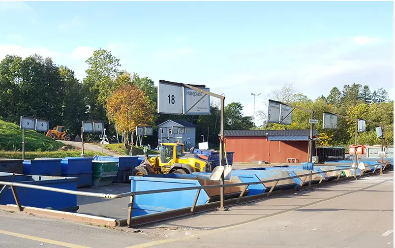

I Lerum, en pittoresk ort omgiven av grönskande skogar och glittrande sjöar, ligger en påhittad soptipp vid namn "Lerums Återvinningspark". Denna soptipp är inte som andra – den har utvecklats till ett kreativt återvinningscentrum där invånarna kan lämna sina överflödiga saker och istället påbörja en resa mot hållbarhet och kreativitet. Parken är indelad i olika områden som representerar olika typer av avfall: plast, metall, papper och biologiskt avfall. En stor del av tippens marknadsföring handlar om att utbilda invånarna om vikten av att återvinna och återanvända. Varje helg arrangeras workshops där besökare kan lära sig att skapa konstverk av återvunnet material, vilket ger en ny mening åt det som annars skulle ha kastats bort. Lerums Återvinningspark har även en mikrobryggeri där produkter från lokala odlare omvandlas till hantverksöl, vilket ger extra incitament till invånarna att delta i återvinningsprogrammet. De kan lämna sina tomma glasflaskor och få biljetter till en guidad rundtur i bryggeriet, där de får smaka på ölen som skapats av återvunna ingredienser. Soptippen har också blivit ett fint grönområde där familjer kan ha picknick och barn kan leka. Genom att integrera natur och funktion, har Lerums Återvinningspark förvandlats från en trist avfallsanläggning till en livlig plats där gemenskap, hållbarhet och kreativitet flödar.
